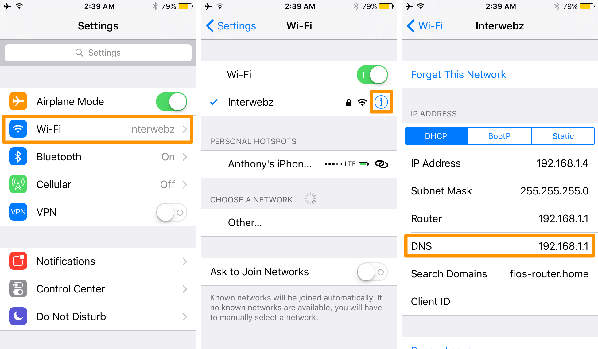

前端程序员有两个必备的技能，第一个是搭建自己的博客网站，第二个就是会翻墙。
搭建自己的博客网站一方面可以熟悉如何用Linux搭建和维护一个网站，另一方面又可以通过博客给自己建立一个知识库。
翻墙这个技能是为了让我们能够使用google，我们都知道许多权威文档都是英文的，所以想要进步就需要翻墙查阅。
DNS（域名系统）
DNS（Domain Name System，域名系统），因特网上作为域名和IP地址相互映射的一个分布式数据库，能够使用户更方便的访问互联网，而不用去记住能够被机器直接读取的IP数串。通过主机名，最终得到该主机名对应的IP地址的过程叫做域名解析（或主机名解析）。
DNS域名解析
首先，计算机要查找本机的缓存hosts文件，如果有web服务器的IP地址，那么直接访问web服务器。如果没有，那么查找本机所配置的DNS，向DNS服务器发送解析请求，服务器通过DNS解析后，向客户机发送域名所对应的IP地址，客户机收到IP地址，解析结束。
DNS劫持
DNS缓存污染已经成了日益普遍的问题。绝大部分DNS服务器都能够将DNS查询结果在答复给发出请求的主机之前，就保存在高速缓存中。DNS高速缓存 能够极大地提高你组织内部的DNS查询性能。问题是如果你的DNS服务器的高速缓存中被大量假的DNS信息“污染”了的话，用户就有可能被送到恶意站点 而不是他们原先想要访问的网站。
翻墙
现在翻墙有一种方法就是将没有被GFW封的IP加入到客户端的hosts文件里，绕过GFW访问国外的网站，当然也可以屏蔽一些广告页面。那现在为什么要介绍DNS服务器呢，因为hosts文件比较容易失效，基本上是隔几天就要修改，比较麻烦。而这时DNS服务器的优势就能体现出来了。
DNS服务器搭建可以提供给多个客户端同时使用，当一个IP失效时只需在DNS服务器上修改而不必挨个在多个客户端上修改hosts文件，所以搭建DNS服务器相比较于修改hosts文件更友好一下。根据前面的介绍我们可以知道客户端是先访问本机的缓存hosts文件，如果hosts文件没有web服务器的IP，再访问DNS服务器，因此hosts文件有更高的优先级，如果你的客户端已经修改了hosts文件就会影响DNS服务器的使用，所以我建议用使用DNS服务器就不要修改hosts文件使用默认的hosts文件即可。
搭建DNS服务器
说了那么多那么如何怎样搭建DNS服务呢？我这里以ubuntu16.04为例，其他系统可以以此作为参考。因为使用在小型的家庭网络中，所以我觉得DNSmasq完全够用了
DNSmasq是一个小巧且方便地用于配置DNS和DHCP的工具，适用于小型网络，它提供了DNS功能和可选择的DHCP功能。
安装DNSmasq
首先我们需要依次输入以下的命令来安装DNSmasq：
|
|
DNSmasq配置
其次我们需要在/etc里添加dnsmasq.host文件。这个文件在网上有一大堆随便搜一搜就会出来了,为了防止有些小白不知道怎么搜我就给个地址吧racaljk/hosts记得把下载下来的hosts文件更名为dnsmasq.host
接下来我们需要配置一下DNSmasq，在/etc/dnsmasq.conf文件里添加一些hosts文件和DNS服务器源
|
|
修改后:wq!保存,输入service dnsmasq restartDNS服务器就已经运行了。然后就是在你的客户端里修改DNS地址，将其修改为你的服务器的IP地址。
以下是ios修改DNS的地方，android和windows自行百度吧。

这里我要列举国内的一些DNS服务器源：
一、114DNS
百度家无节操的东西，最近搞广告劫持
纯净无劫持，无需再忍受被强扭去看广告或粗俗网站之痛苦：
114.114.114.114
114.114.114.115
拦截钓鱼病毒木马网站，增强网银、证券、购物、游戏、隐私信息安全：
114.114.114.119
114.114.115.119
学校或家长可选，拦截色情网站，保护少年儿童免受网络色情内容的毒害:
114.114.114.110
114.114.115.110
二、阿里DNS
阿里DNS是阿里巴巴集团推出的DNS递归解析系统，面向互联网用户提供快速、稳定、智能的免费DNS递归解析服务。
阿里家一样流氓
223.5.5.5
223.6.6.6
三、SDNS
SDNS是由中国互联网络信息中心（CNNIC）与国内外电信运营商合作推出的免费公共云解析服务（SecureDNS，简称SDNS），旨在为用户提供高速、安全、智能的上网接入解析服务。
1.2.4.8
210.2.4.8
四、[中科大的DNS]
不解释，无污染、速度快。这是我觉得最好的DNS服务器源
202.38.64.1
202.112.20.131
202.141.160.95
202.141.160.99
202.141.176.95
202.141.176.99
#写在最后
当然这种方法并不能访问所有的国外网站，所以如果有能力有兴趣可以自己去搭建一个SS服务器。这里我分享一下我自己搭得SS服务器，因为这是用来给大家学习提供帮助的所以我希望大家不要用这个去下载大型文件或者去做一些违法的事情。程序员何苦难为程序员呢。
服务器：153.125.234.240
远程端口：31836
本地端口：1080
密码：1229
加密方法：AES-256-CFB
已失效